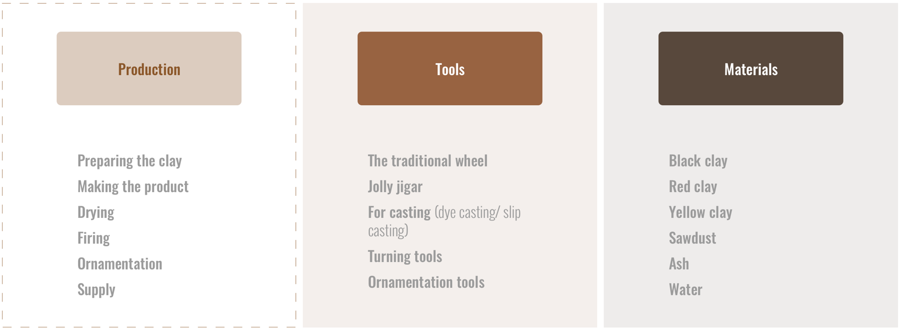
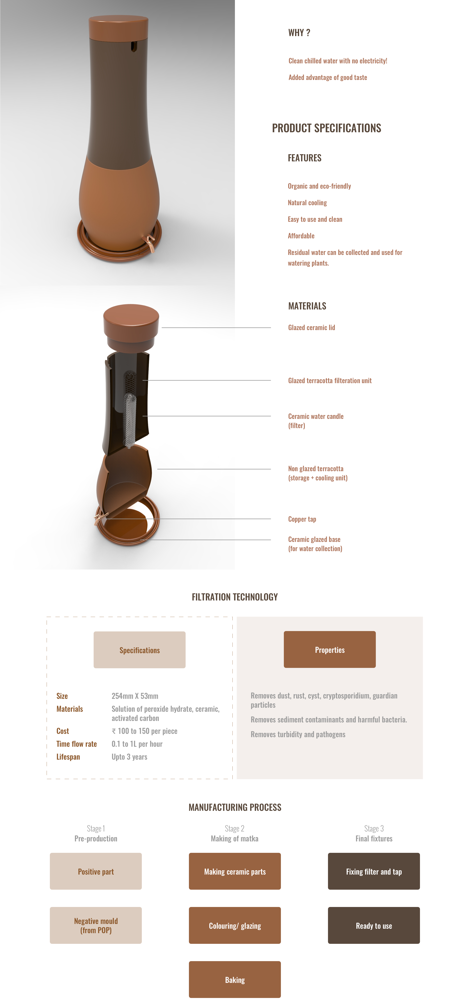

PRODUCT DESIGN
TOYAM
A next generation matka with an integrated filter
OVERVIEW
This group project was part of coursework during my third year at the National Institute of Design, India.
Toyam is a next generation matka (an earthen clay pot that keeps water stored inside naturally cool due to its porous nature) with an integrated filter for clean chilled water with no electricity.
ROLE AND DURATION
Research, prototyping, material exploration, product design
Team of 4 designers
1 week (2015)
THE CHALLENGE
“How can we change the design of a traditional Indian product incrementally to meet the needs of the modern generation?”
WHAT IS A MATKA?
A matka is a traditional Indian earthen clay pot used for storing water or curd. It keeps the contents naturally cool in hot and humid weather due to its porous nature. It is used in a vast number of Indian households.

UNDERSTANDING THE PRODUCT
To understand more about the properties, tools and processes involved with the product, we paid a visit to Sarkhej, the potter’s village in Ahmedabad, India and spoke to the potters there.

THE SOLUTION
“We decided to redesign the matka with an integrated filter!”

Creating more products that celebrate terracotta
Working towards preserving our traditions
Supporting Indian artisans and bringing them forward
KEY TAKEAWAYS
- Respect the artisan
Visiting the potter’s village for initial research and product understanding was a great learning towards how traditional indian artisans work and the challenges that they face. It opened my eyes towards the need for social design.
- Value addition should make sense
Redesigning a product is not just about changing the form, it should also improve the function of the product and there should be some value addition, making it the basic difference between art and design.